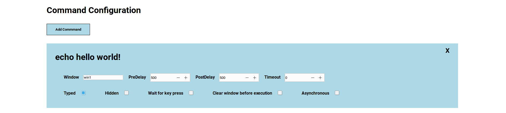

Clide is a tool for creating automated demos for terminal-based applications. Using a json file, you can script out a demo in the terminal to free your hands up from having to copy and paste commands, or handle typos when you're in the middle of giving a presentation.
This page contains download links for .deb and .rpm packages for installation on debain and rpm based linux distributions. To install clide, click the download for your operating system and install the package using your operating systems default software manager. Alternatively you can clone the repository or download the source code and use the makefile command make install to install clide from the source code. See the project's github page and readme for more information regarding setting up dependencies for development and to build the application from the source.
The demos included with the binary are demo, windows, and network. These json files can be found in the /usr/share/clide/examples folder for reference. Looking at the included demo json files is a good starting point to see all the options available when creating a demo with clide. Note that some included demos may use linux packages not installed on your system. If you see an error about a command not running because a program is not installed, you must install the package for the demo to execute properly.
Follow the docs link at the top of the page to get information about what each of the possible json fields will do for your demo.
Clide is built to seamlessly manage complete cli demo. To achieve this, clide has features that allow for clearing the window, running multiple windows, running commands hidden from the window, and many more. Clide also comes packaged with a graphical editor that makes it easy to create a new clide demo using all the available features, as well as converting a script file into a runnable clide demo directly.
A more extensive list of features clide supports are below:
To get started developing with clide, follow the github link at the top right of the page. From there you can clone or fork the project and customize as you please.
The docs link at the top of the page includes information about the clide package and structs within it.